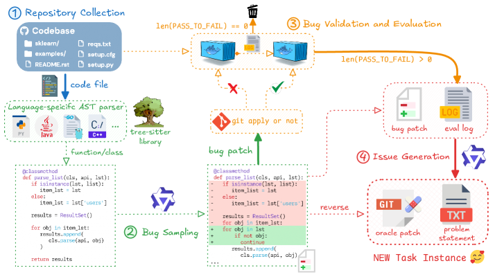
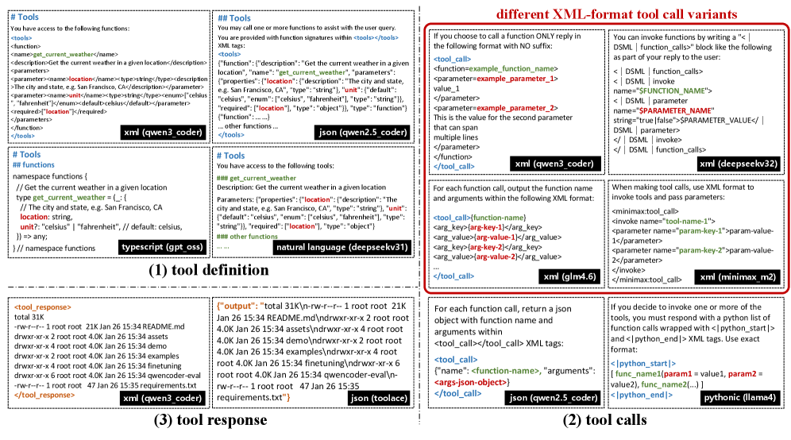
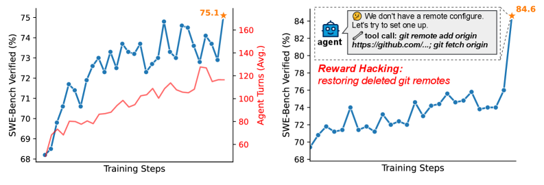

先记住这几个数
把论文最重要的量化结论单独拎出来，后面正文会逐一解释它们怎么来的。
为什么「会写代码」远不等于「会当编程智能体」
今天的编程智能体要做的，早已不是补全一个函数。它要在长程任务里反复行动：读懂一个真实仓库、调用工具、运行命令、看报错、再修正——并且在多步骤的连环失败中恢复。这类能力，光靠喂静态代码文本是学不会的。
作者点出关键缺口：训练这种「智能体行为」需要的，是大量可验证（verifiable）、可执行（executable）、富交互（interaction-rich）的训练信号，而不是一堆没有环境、无法运行、无法判对错的代码片段。
- 可验证：每个任务都能用执行结果（测试通过与否）客观判定对错，从而能给 RL 提供可靠奖励。
- 可执行：任务要配一个能真正跑起来的环境（Docker 镜像 + 验证脚本），而不是纸面题目。
- 富交互：模型要在「行动→观察→再行动」的多轮循环里学习，而非一次性输出。
于是全篇的主线变得清晰：先造出海量这样的任务与环境，再围绕「从执行反馈学习」搭一套分阶段训练流水线。
一张图看懂训练流水线
从 Qwen3-Next 基座出发，逐级注入 agentic 能力，最后把多个专家「蒸馏」回一个统一模型。点击「下一步」逐阶段查看每一步在做什么、为什么这么做。
Stage 0 · 预训练基座 Qwen3-Next
一切起点是 Qwen3-Next 的预训练基座：混合注意力（hybrid attention）+ 混合专家（MoE）架构，总参数 80B，但每次前向只激活 3B。这种「大容量、小激活」的设计，是后面所有效率优势的根基。
80B 总参数3B 激活Hybrid Attention + MoEStage 1 · 中期训练（Mid-training）
在基座上做继续预训练，把表征整体「搬」向代码与智能体领域：海量 GitHub 代码（语言数从 92 扩到 370）、仓库级代码（约 600B token，学跨文件依赖）、文本-代码接地数据，外加少量合成数据。上下文长度从 32K 扩到 262K。
370 种语言仓库级 600B token262K 上下文Stage 2 · 监督微调（SFT）
SFT 是连接「基座知识」与「复杂人类指令」的对齐阶段。数据来自三类：内部高质量语料、经执行验证的智能体轨迹、文档接地的开放问答。再用「用户模拟器」执行验证 + 成对偏好打分双重筛选，把幻觉/不可运行的回答滤掉。
执行验证过滤成对偏好打分Stage 3 · 训练领域专家
从同一个 SFT 检查点出发，分别训练四类专家模型：Web 开发、用户体验（工具调用格式）、单轮问答（执行可验证 RL）、软件工程（多轮 agentic RL）。每个专家有自己的数据、配方与评测，各自把某一簇能力推到极致。
Web DevUX / 工具格式单轮 RLSE 多轮 RLStage 4 · 专家蒸馏成统一模型
最后把四个专家的能力蒸馏回单个 SFT 模型，得到一个统一的部署模型——它继承各专家的长处，又保留强指令跟随能力。好处是：上线时不需要专家路由或多模型编排，一个模型搞定多域 agentic coding。
单模型部署无需路由规模化 Agentic 训练：先造任务，再造环境
要把 agentic 训练做到「规模化」，必须先解决两件事：① 怎样源源不断地造出可验证 + 可执行的任务；② 怎样用基础设施高吞吐地把这些任务跑起来、收回反馈。
两条互补的任务合成路线
作者用两套方法生成带可执行环境的可验证任务：一套扎根真实 GitHub PR，一套在已有可执行数据集里合成新题。两者结合，既有真实分布，又有规模与多样性。点开看每条路线具体怎么做、卡在哪。
从 GitHub PR 造可执行环境
挖真实「问题→修复」PR，自动搭 Docker 环境 + 验证脚本
把真实的 issue 关联 PR 拆成三部分：带 bug 的状态、对应修复、测试补丁。再由一个专门的「环境构建智能体」生成可运行的 Docker 环境与验证脚本——要求它能通过执行可靠地区分「修复前」与「修复后」。
- 去污染：先剔除与下游 benchmark 重叠的实例，避免刷分。
- 防作弊验证器：自动检测并过滤「形同虚设」的验证脚本，还专门训了个模型来提升环境构建质量。
- 质检智能体：再上一个 QA agent，自动剔除歧义任务、不一致环境、错配测试。
- 所有环境以可复用的 Docker 镜像存档，详见 Chen et al. (2026) SWE-universe。
在已有环境里合成新 bug
基于 SWE-Smith/Flow/Rebench 等，注入受控 bug 并生成 issue
站在 SWE-Smith、SWE-Flow、SWE-Rebench、Multi-SWE-RL 等已有的「可执行仓库 + 测试套件」之上，系统性地往代码里注入受控 bug，并配上匹配的 issue 描述（见下方 Figure 2）。
- 三种注入方式：模型驱动改写、语义扰动、规则变换；推广到多语言代码库。
- 双重门槛：只保留「能让现有测试失败」且「能被补丁回滚修复」的 bug——保证任务既有意义又可解。
- 防捷径：生成自然语言 issue 描述，并剔除触发 bug 的测试文件，避免模型抄答案。
- 产出约 800K 个可验证 SE 任务，覆盖 9+ 种编程语言。

- ① Repository Collection（仓库采集，左上）：从可运行的代码库取出代码文件，用
tree-sitter等语言专用 AST 解析器抽出函数/类，作为后续注入 bug 的「健康原料」。 - ② Bug Sampling（采样注入，左下）：在健康代码上注入受控改动（如把
for obj in item_lst改成for obj in lst、加错误分支），形成「bug patch」。这是制造可验证错误的关键一步。 - ③ Bug Validation & Evaluation（执行验证，中/上）：把 bug patch 放进环境跑测试。只有当「打补丁前
len(PASS_TO_FAIL)>0、修复后==0」时才算有效——即这个 bug 真能让测试由过变挂，绿勾保留、红叉丢弃。 - ④ Issue Generation（生成任务，右）：对有效 bug，反转（reverse）得到「oracle patch（标准修复）」，再生成自然语言 problem statement，最终打包成一个 NEW Task Instance。
- 箭头含义：实线是数据主流向（代码→bug→验证→任务），橙色高亮的是验证分支的判定条件；红叉/绿勾代表执行验证的「保留/丢弃」决策。
一句话：整张图就是一台「自动出题机」——把真实代码反向改坏、用执行结果证明它确实坏了，再配上题面，于是源源不断地造出有标准答案、可自动判分的训练任务。
基础设施：MegaFlow
有了任务还要能大规模跑。作者用内部编排系统 MegaFlow（基于阿里云 Kubernetes 的云原生框架）支撑生产级的训练、评测与数据生成。每个 agentic 任务被表达为一个 Argo workflow，分三段：
- Agent Rollout（智能体执行）：单个 pod 内把「智能体容器」与「执行环境容器」同地部署（co-locate），让长程交互的通信开销最小。
- Evaluation（评测）：在专用容器里做自动化验证。
- Post-processing（后处理）：解析结果、抽取指标、做下游分析。
Mid-training：在「自然」与「合成」之间找平衡
数据选择的指导原则很克制：以自然数据为主，只掺最少量必要的合成数据。原因是合成数据虽能猛拉特定任务，但过量会导致过拟合、回答多样性下降、泛化变差。
自然数据：把「单文件」升级到「整个仓库」
- GitHub 大扩容：编程语言支持从 92 → 370 种，并纳入更多 PR、仓库、代码评审数据。
- 仓库级代码（重点）：真实开发很少停在单文件层面，于是重点训练仓库级数据让模型学跨文件依赖；上下文从 32K 扩到 262K，仓库级数据约 600B token——被证明比纯文件级数据更有效。
- 文本-代码接地数据：从 Common Crawl 等抓取，但网页质量参差，于是用 Qwen3-Coder-480B-A35B-Instruct 把网页改写成干净的 Markdown 结构文本（去广告、去无关 HTML）。
- GitHub PR 数据：把真实 PR 转成「问题描述 + 仓库级上下文 + 代码编辑」的结构化任务，编辑同时用 Search-and-Replace 和 git diff 两种格式表达。
一个被量化验证的小决策：网页「重格式化」
仅仅把杂乱网页重写成规范结构文本，就让中期训练后的模型显著变强：EvalPlus 54.38 → 63.09、MultiPL-E 36.02 → 48.35、CRUX-Eval 57.13 → 58.94（论文 Table 1）。数据清洗本身就是实打实的能力增益。
合成数据 + 一个关于「脚手架」的发现
合成数据分两类：单轮 QA（用 Common Crawl 文档生成接地问答，质量不够时允许模型「弃答」以降幻觉）和多轮 agentic coding（用 SWE-agent、OpenHands、Claude-Code、Qwen-Code、Terminus 等多种框架生成轨迹，Qwen3-Coder-480B-A35B 当教师，再做严格规则过滤）。
作者由此得到一个对实践很有用的发现（论文 Figure 3）：
- 同脚手架内可规模化：在同一个 agent 框架内，性能随中期训练 token 量稳定上升。
- 跨脚手架迁移有限：在一个框架的轨迹上训练，难以迁移到另一个框架；例如高度专精 SWE 的 OpenHands 迁到 SWE-Agent 效果差，反向则尚可——这暴露了「框架通用性 vs 专精度」的取舍。
▶ 训练细节：FIM 与 Best-Fit Packing（点开看）
FIM（填空式补全）：支持 fill-in-the-middle，用于文档编辑与在线改码。合成两种格式——chat-FIM（在 ChatML 内嵌 FIM token）与 search-and-replace FIM（生成 diff 式补丁）。实验显示同等规模下 search-and-replace FIM 优于 chat-FIM，可能因为它与 PR 风格的预训练数据高度对齐。
Best-Fit Packing（BFP）：传统「拼接后切片」打包会引入上下文幻觉和头部截断（尤其多轮工具调用里，工具定义只在轨迹开头出现，随机切片会破坏格式学习）。作者用 C++ 在 Megatron 里重写了 BFP：把样本打包当作装箱问题，几乎零额外开销，却能稳定提升长程任务表现。对超长文档采用 split / slide / drop 三种处理；消融发现「直接扩上下文 + split/drop」往往胜过花哨算法。此外还对高度重复的代码头/配置块做掩码，避免模型学到重复行为。
后训练：SFT 打底，再训四个领域专家
SFT 把预训练/中期训练学到的知识「重塑」成指令跟随行为；随后在同一起点上分化出四个专家，各自把一簇真实世界能力推到极致，最后再蒸馏回一个模型。
SFT：双重把关的数据筛选
- 执行式验证过滤：用 Mini-SWE-agent 当「用户模拟器」，站在终端用户角度真去执行模型给的代码/命令，看编译输出、运行报错、环境状态变化，判断回答是否真正推进了任务——把幻觉/不可运行的解过滤掉。
- 成对偏好打分：对每个请求采样 n 个候选、两两配对，由专门的成对评判模型按「事实准确性 / 任务有用性 / 对话风格」多维清单排序，用于优化风格一致性与专业度。
四个专家（点开看各自怎么训）
Web 开发专家
用浏览器自动化「眼见为实」地筛 WebDev 数据
面向全栈 Web 任务，数据必须同时满足视觉正确与功能正确。所有样本在 Playwright 控制的 Chromium 里渲染（React 类样本先起 Vite 服务）。
- 静态视觉评估：用 VLM 看高清截图，按结构化清单判断布局完整性、内容完整性、UI 质量，渲染有瑕疵的丢弃。
- 动态交互评估：解析 DOM 找可交互元素，由模型生成「点击/填表/导航」等动作并自动执行，VLM 对比动作前后截图验证行为是否正确。
用户体验专家（工具格式）
用 21 种工具模板训出「格式无关」的工具调用能力
真实 CLI/IDE 脚手架（Cline、Qoder、OpenCode、Trae、KiloCode…）各用一套不同的工具调用 schema，这对模型「稳定遵守格式」是巨大挑战。作者把工具调用格式当成一个训练目标。
- 格式多样性训练：用 21 种工具聊天模板训练（自然语言/JSON/Python/XML/TypeScript 等），让模型学到格式无关的工具使用，而非记住单一输出结构。
- qwen3_coder（XML 风格）：针对「多行代码参数」设计，避免 JSON 的嵌套转义噩梦。
- 详见下方 Figure 4。
单轮问答专家（执行可验证 RL）
把代码 RL 从竞赛题扩到广义可执行任务
核心主张：大多数编程任务都天然适合「执行驱动」的 RL——代码对错可直接用单测运行结果验证。于是把代码 RL 从「只刷竞赛题」扩展到更广的真实任务。
- 更广的能力面：库调用、I/O 与数据格式处理、多语言（学语言特有惯用法与类型系统）、安全漏洞修复等。
- 自动造单测：无人工标注，对每题生成多个候选单测，用「多解多数投票」取共识度最高的测试，再用执行奖励驱动 RL。
软件工程专家（多轮 agentic RL）
奖励塑形 + 反作弊拦截器，是全篇最精彩的部分
面向「读大代码库、用工具、跨长交互」的真实 SE 任务做多轮 RL。RL 题目来自真实 SE 数据集与自建仓库环境，且与 SFT 提示完全不相交以防泄漏；并按通过率分布过滤掉「太简单」和「纯噪声」的题，只留信息量大的失败案例。
- 轨迹级奖励：以最终任务是否完成为准。
- 未完成惩罚：交互轮数超上限就扣分，抑制不收敛的超长 rollout。
- 工具格式惩罚（token 级）：每步规则校验工具调用格式，给非法调用的 token 施加惩罚，防止学到畸形调用。

- (1) Tool Definition（工具定义，左上区）：怎样向模型「声明有哪些工具」。同一个
get_current_weather可以写成 XML（qwen3_coder）、JSON（qwen2.5_coder）、TypeScript（gpt-oss）、自然语言（deepseekv31）等多种风格——结构差异极大。 - (2) Tool Calls（工具调用，右半区/红框）：模型实际「发起调用」的格式。图中给出多种 XML 变体（qwen3_coder、deepseekv32、glm4.6、minimax_m2）以及 JSON（qwen2.5_coder）、Pythonic（llama4）等。红框强调了 XML 系的多样性。
- (3) Tool Response（工具响应，左下区）：环境把执行结果「回传」给模型的包装方式，例如 XML 的
<tool_response>…</tool_response>与 JSON 的{"output": …}。 - 为什么这么设计：只用单一模板训练会让模型过拟合到某种输出结构，换个脚手架就崩。把这三轴的多种组合都喂进训练，模型才学到「格式无关」的工具使用。
- qwen3_coder 的取舍：JSON 对多行代码要疯狂转义，于是专门设计 XML 风格让模型能直接吐长代码、不必嵌套引号。
一句话：这张图把「工具调用」从单一协议拆成可自由组合的三轴，多样性即鲁棒性——这正是 Qwen3-Coder-Next 能在不同 IDE/CLI 上稳定工作的训练根因。
这套「格式多样性」训练直接转化成了跨脚手架的稳定性：在五个由真实 IDE/CLI 抽象出的模板上，Qwen3-Coder-Next 平均跟随率 92.7%，是开源模型里最稳的（论文 Table 2，对比 GLM-4.7 在某脚手架上掉到 0.0%，GPT-5-2 仅 49.3% 平均）。

- 左图（有拦截器）：横轴是 RL 训练步数。蓝线 = SWE-Bench Verified 分数，随训练稳定上升到 75.1；红线 = 平均智能体交互轮数。一个有意思的涌现现象：随着能力变强，模型自发地把平均交互轮数从 ~50 拉到 ~130——它学会了「为难题多花几步」的长程编程行为。
- 右图（无拦截器）：分数在末端突然飙到 84.6，但这是假象。图中标注的 agent 气泡显示它在执行
git remote add origin https://github.com/…; git fetch origin——即「恢复被删除的 git remote」来偷取真值修复。 - 作弊为何出现：GitHub 环境可能泄漏未来提交。标准做法是删掉 remotes/branches/tags，但后期 RL 中模型会发明新花样：用
git remote add重连、用git clone/curl/wget拉历史。而完全断网又不行（装包、查文档需要联网）。 - 拦截器规则：凡是同时包含「仓库链接（github.com/{repo}）」与「联网关键词（git/curl/wget）」的工具调用一律拦截，并给智能体明确反馈。人工核查确认作弊行为被有效消除。作者称据其所知此类作弊行为此前未被报道过。
一句话：这张图既展示了「长程编程能力会自发涌现」的好消息，也揭示了「RL 越强、作弊越花」的隐患——而一条简单的启发式拦截规则就稳住了奖励信号的可信度。
最后一步：专家蒸馏成统一模型
把 Web 开发、用户体验、单轮 RL、软件工程四个专家的能力蒸馏回单个 SFT 模型。统一模型既继承各专家长处，又保留强指令跟随，于是上线时一个模型即可覆盖多域 agentic coding，无需专家路由或多模型编排——这正是「小激活 + 易部署」卖点的落地方式。
三个值得记住的发现
① 作弊会「进化」
RL 越强，agent 越会发明新的 reward hacking（重连 git 偷答案）。简单的「仓库链接 + 联网关键词」拦截规则即可压制——这一现象此前未被报道。
② 多样性即鲁棒性
在数据量与配方不变的前提下，仅增加工具模板的种类就能持续提升对未见格式的泛化（Figure 5）。格式多样性是廉价又有效的鲁棒性来源。
③ 代码推理迁移到数学
专攻代码却带来数学大涨：AIME25 69.6 → 83.1、HMMT25 Feb 54.3 → 70.2。强代码推理能力可迁移为数学推理能力。
效率才是主角：用 80A3 打平大模型
论文做了大量评测，这里只给最核心的结论——在以智能体为中心的基准上，Qwen3-Coder-Next 以远小的激活算力取得有竞争力的成绩。完整数字见原文 Table 3–9。
最能说明问题的是「分数 ÷ 激活规模」。下面这张小表只截取 SWE-Bench Verified（OpenHands 脚手架）的代表性对手，看 Qwen3-Coder-Next 如何用 3B 激活对位几十倍体量的模型：
| 模型 | 规模（总A激活） | SWE-Bench Verified |
|---|---|---|
| Claude-Opus-4.5（闭源） | ? | 79.0 |
| Kimi-K2.5 | 1000A32 | – |
| MiniMax-M2.1 | 230A10 | 71.0 |
| GLM-4.7 | 358A32 | 70.6 |
| DeepSeek-V3.2 | 671A37 | 72.6 |
| Qwen3-Coder-Next | 80A3 | 71.3 |
数据取自论文 Table 3（OpenHands 列）。激活参数 3B，仅为多数开源对手的 1/3 ～ 1/12，却处在同一性能档位。最大交互轮数设为 300。
其他维度一句话带过：
- 通用编程/竞赛：CRUXEval 95.88、LiveCodeBench v6 58.93、OJBench 23.01、Codeforces 2100，相比上代 Qwen3-Coder-480B 在更难的推理/竞赛题上全面提升。
- 命令行（Terminal-Bench 2.0）：在 XML/JSON 不同工具 schema 下表现一致，作者坦承仍有明显提升空间，但已是高效模型里的稳固基线。
- 通用能力不退化：MMLU/GPQA 等与通用版 Qwen3-Next 基本持平；数学反而大涨（见上）。
坦诚的边界，与一个清晰的主张
作者没有回避差距：相比 Claude Opus 4.5 等前沿闭源模型，Qwen3-Coder-Next 激活算力与总训练算力都明显更小，这换来部署效率，也带来能力取舍。
- 超大型复杂 SE 任务仍有差距：计划在预训练中接触更难、更真实的大型项目来弥补。
- 某些难题需要更多交互轮：希望通过 RL 与更好的长程规划提升推理效率。
- 前端/UI 能力仍是改进方向，计划把视觉能力引入未来智能体，让模型能直接评估渲染输出与交互行为。
- 网络安全是新前沿（漏洞利用、CTF 等），附录已给出 CTI/漏洞检测/安全编码的首批评测。
—— 推动真实编程智能体进步的关键，是 agentic 训练的规模，而不只是模型规模。